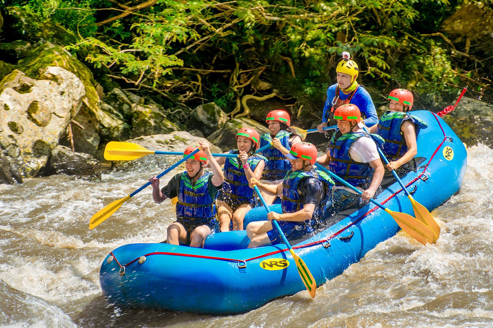

Origen del Canotaje
El canotaje es un deporte que se practica en ríos de aguas bravas o blancas y en aguas tranquilas de algunas ciudades y pueblos de todo el mundo. El origen de este deporte no se conoce con exactitud, pero sí se sabe que la canoa es la embarcación más antigua en la historia de la humanidad y es utilizada actualmente.
La historia más conocida acerca de este deporte es la que cuenta que la canoa fue el medio de navegación empleado por los esquimales (hombres y mujeres que habitan la zona ártica de América del Norte, conocida como Canadá) con una antigüedad de aproximadamente 3 000 años.
Elementos del Canotaje
Para practicar canotaje se necesitan los siguientes elementos:
- Chaleco salvavidas (en todas las épocas del año) es imprescindible.
- Cubre cockpit de neopreno o plástico. (Protege el cuello y el pecho).
- Flotador de pala (en caso de maniobras de reintroducción al kayak).
- Kayak equipado con línea de vida (cuerda perimetral).
- Cuerda de salvamento o rescate de 20 m.
- Elementos de señalización (bengalas, silbato)
- Casco de seguridad